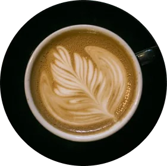

<div class="landing__container">
  <div class="landing__central">
    
  </div>
  <div class="landing__curved-box">
    <svg
      class="landing__svg"
      width="250"
      height="250"
      viewBox="0 0 250 250"
      xmlns="http://www.w3.org/2000/svg"
    >
      <!-- <circle r="100" id="curve" cy="125" cx="125" stroke="#fff" fill="#000" /> -->
      <!-- <path id="curve" class="landing__path" d="M25,125a100,100 0 1,0 200,0a100,100 0 1,0 -200,0" /> -->
      <path id="curve" class="landing__path" d="M38,175a100,100 -30 1,0 174,-100" />
      <text class="landing__curved-text" width="250">
        <textPath xlink:href="#curve">     FrontEnd Sunrise Café</textPath>
      </text>
    </svg>
  </div>
  <div class="landing__wave--one">
    
  </div>
  <div class="landing__wave--two">
    
  </div>
  <div class="landing__text-box">
    <p class="landing__text">Un ambiente para disfrutar del rico aroma del café y su sabor.</p>
  </div>
</div>
